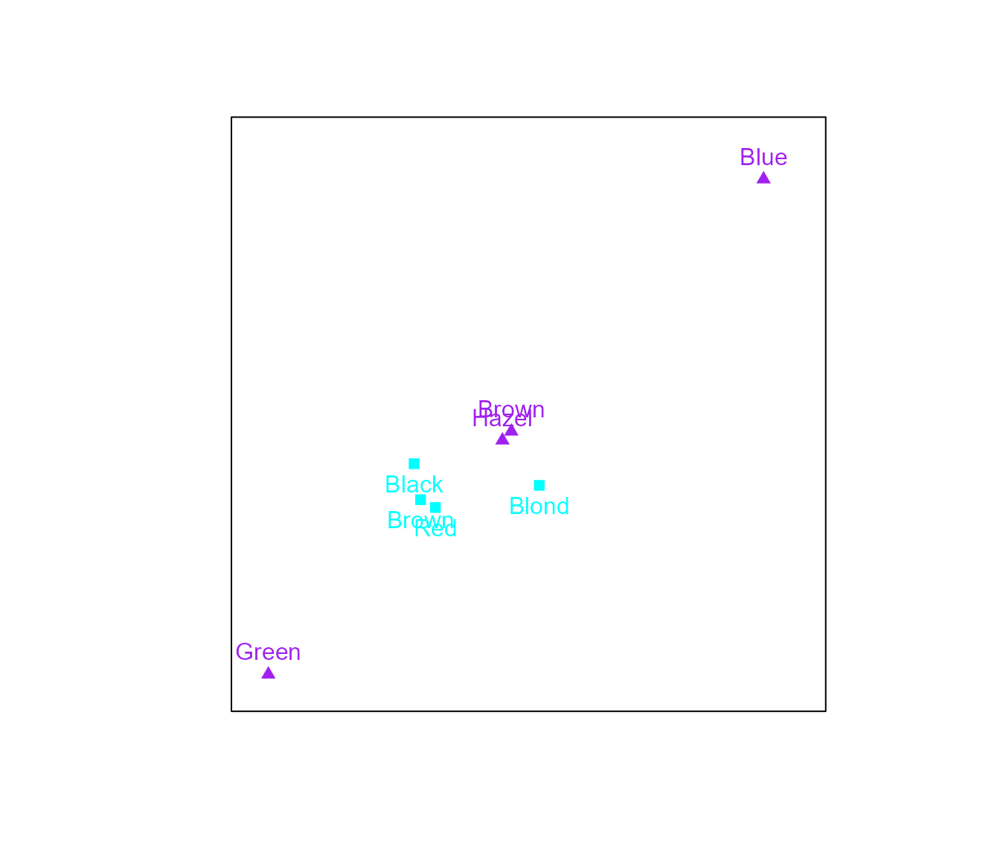

CA in biplotEZ
CA_in_biplotEZ.RmdWhat is a Correspondence Analysis?
In its simplest form Correspondence Analysis (CA) aims to expose the association between two categorical variables by utilising a two-way frequency table. Numerous variants of CA are available for the application to diverse problems, the interested reader is referred to: Gower, Lubbe, and Roux (2011), Beh and Lombardo (2014).
In this vignette, focus will be placed on three EZ-to-use versions based on the Pearson residuals (Gower, Lubbe, and Roux (2011) :300).
Now, the two-way frequency table is also referred to as the data
matrix:
.
This data matrix is different from the continuous case used for the
PCA() and CVA() examples, as it represents the
cross-tabulations of two categorical variables (i.e. factors), each with
a finite number of levels (i.e response values). The elements of the
data matrix represent the frequency of the co-occurrence of two
particular levels of the two variables. Consider the
HairEyeColor data set in R, which summarises
the hair and eye color of male and female statistics students. For the
purpose of this example only the male students will be considered:
X <- HairEyeColor[,,2]
X
#> Eye
#> Hair Brown Blue Hazel Green
#> Black 36 9 5 2
#> Brown 66 34 29 14
#> Red 16 7 7 7
#> Blond 4 64 5 8The grand total of the table is obtained from the total of all frequencies:
N <- sum(X)
N
#> [1] 313It is common to work with the proportions rather than the frequencies in terms of the correspondence matrix, :
P <- X/N
P
#> Eye
#> Hair Brown Blue Hazel Green
#> Black 0.115015974 0.028753994 0.015974441 0.006389776
#> Brown 0.210862620 0.108626198 0.092651757 0.044728435
#> Red 0.051118211 0.022364217 0.022364217 0.022364217
#> Blond 0.012779553 0.204472843 0.015974441 0.025559105Other useful summaries of include the row and column masses (for arbitrary row and column and , respectively), also expressed as diagonal matrices:
$$ \mathbf{r}_r = \sum_{c=1}^{C}p_{rc}; \hspace{0.5 cm} \mathbf{c}_c = \sum_{r=1}^{R}p_{rc}\\ \mathbf{r}=\mathbf{P1}; \hspace{0.5 cm} \mathbf{c}=\mathbf{P}^\prime\mathbf{1} $$
rMass <- rowSums(P)
rMass
#> Black Brown Red Blond
#> 0.1661342 0.4568690 0.1182109 0.2587859
cMass <- colSums(P)
cMass
#> Brown Blue Hazel Green
#> 0.38977636 0.36421725 0.14696486 0.09904153Diagonal matrices:
$$ \mathbf{D_r}=\text{diag}(\mathbf{r}); \hspace{0.5 cm} \mathbf{D_c}=\text{diag}(\mathbf{c}) $$
Dr <- diag(apply(P, 1, sum))
Dr
#> [,1] [,2] [,3] [,4]
#> [1,] 0.1661342 0.000000 0.0000000 0.0000000
#> [2,] 0.0000000 0.456869 0.0000000 0.0000000
#> [3,] 0.0000000 0.000000 0.1182109 0.0000000
#> [4,] 0.0000000 0.000000 0.0000000 0.2587859
Dc <- diag(apply(P, 2, sum))
Dc
#> [,1] [,2] [,3] [,4]
#> [1,] 0.3897764 0.0000000 0.0000000 0.00000000
#> [2,] 0.0000000 0.3642173 0.0000000 0.00000000
#> [3,] 0.0000000 0.0000000 0.1469649 0.00000000
#> [4,] 0.0000000 0.0000000 0.0000000 0.09904153In order to obtain the first form of the row and column coordinates, the singular value decomposition (SVD) of the matrix of standardised Pearson residuals () is computed:
The return value for the Standardised
pearson residuals is Smat and the singular value
decomposition, SVD.
Smat <- sqrt(solve(Dr))%*%(P-(Dr %*%matrix(1, nrow = nrow(X),
ncol = ncol(X)) %*% Dc))%*%sqrt(solve(Dc))
svd.out <- svd(Smat)
svd.out
#> $d
#> [1] 5.499629e-01 1.806424e-01 7.541748e-02 8.574459e-17
#>
#> $u
#> [,1] [,2] [,3] [,4]
#> [1,] -0.3832205 0.7807477 -0.27828196 0.4075956
#> [2,] -0.3195599 -0.2982325 0.59335474 0.6759209
#> [3,] -0.1736837 -0.5332073 -0.75320188 0.3438181
#> [4,] 0.8490333 0.1310737 -0.05635808 0.5087101
#>
#> $v
#> [,1] [,2] [,3] [,4]
#> [1,] -0.61837991 0.4547976 -0.14487614 0.6243207
#> [2,] 0.75797511 0.2307003 0.08963172 0.6035041
#> [3,] -0.20612962 -0.5898626 0.68015284 0.3833600
#> [4,] 0.02430218 -0.6260980 -0.71300012 0.3147086This is linked to the -statistic to determine whether the two categorical variables (i.e. the rows and columns of the contingency table) are independent. The expected frequencies represented by the product of the row and column masses ().
Furthermore, since the weights of certain objects might be substantially different from others which could result in a distorted approximation in lower dimension, the -distance, also referred to as the weighted Euclidean distance, is rather used to measure distances in CA. This is an intuitive decision as it follows from the -statistic to test the independence between two categorical variables, in this case the independence between the rows and columns of the contingency table. (Beh and Lombardo (2014), Greenacre (2017)).
CA biplot
Coordinates
In order to construct a biplot in which the distances between the row and column coordinates are meaningful an asymmetric display should be constructed. This means that the contribution of the singular values should be different for the row and column coordinates. (Gabriel (1971)) The standard coordinates are expressed by:
$$ \begin{aligned} \text{Row standard coordinates:} \hspace{0.5 cm}&\mathbf{U}\\ \text{Column standard coordinates:} \hspace{0.5 cm}&\mathbf{V} \end{aligned} $$
The principal coordinates are expressed by:
$$ \begin{aligned} \text{Row principal coordinates:} \hspace{0.5 cm}&\mathbf{U\Lambda}\\ \text{Column principal coordinates:} \hspace{0.5 cm}&\mathbf{V\Lambda} \end{aligned} $$
By including the singular values the magnitude of the association between the variables are incorporated in the scaling of the coordinates.
In the ca() function the argument variant
allows the user to choose between three types of CA biplots:
Princ, Stand and Symmetric.
$$
\begin{aligned}
\text{Row coordinates:} \hspace{0.5 cm}&\mathbf{U\Lambda^\gamma}\\
\text{Column coordinates:} \hspace{0.5
cm}&\mathbf{V\Lambda^{1-\gamma}}
\end{aligned}
$$ The row standard (i.e. column principal) coordinate biplot:
Stand, results from
.
The row principal (i.e. column standard) coordinate biplot:
Princ, results from
.
The symmetric plot in which row and column coordinates are scaled
equally: Symmetric, results from
.
The return value is rowcoor and colcoor,
respectively.
Lambda scaling
As presented in Gower, Lubbe, and Roux (2011) :24, when constructing a biplot representing the rows of a coordinate matrix and . Take note that the inner product is invariant when and are scaled inversely by .
An arbitrary value of can be selected or an optimal value could be to ensure that the average squared distance of the points in and is equal.
The default setting is to not apply lambda-scaling (i.e. ).
The return value is lambda.val.
Measures of fit
quality, adequacy,
row.predictivities and column.predictivities
are available for CA biplots.
As explained in the biplotEZ vignette, the quality of the biplot is measured by the ratio of the variance explained (sum of the squared singular values of the utilised () components) and the total variance (sum of all squared singular values ()).
The adequacy refers to the
representation of the variables. In CA() the factor
variable represented in the columns is treated as the variables and is
calculated as explained in the biplotEZ vignette:
The predictivities provide a measure of how well the original values are recovered from the biplot. An element that is well represented will have a predictivity close to one, indicating that the row or column variable values from prediction is close to the observed values. If an element is poorly represented, the predicted values will be very different from the original values and the predictivity value will be close to zero.
The row.predictivities are calculated as follows (Gower, Lubbe, and Roux (2011) :299):
$$ diag(\mathbf{U}\mathbf{\Sigma}\mathbf{J}\mathbf{\Sigma}\mathbf{U}')[diag(\mathbf{U}\mathbf{\Sigma}\mathbf{\Sigma}\mathbf{U}')]^{-1}\\ =diag(\mathbf{U}\mathbf{\Sigma}^2\mathbf{J}\mathbf{U}')[diag(\mathbf{U}\mathbf{\Sigma^2}\mathbf{U}')]^{-1} $$
The col.predictivities are calculated as follows (Gower, Lubbe, and Roux (2011) :299):
The function CA()
The function CA() requires a two-way contingency table
as input and will return an object of class CA and
biplot. As this is not a standard data matrix as for
PCA and CVA, scaling and centering is not
allowed on the two-way contingency table and a warning will be given if
either scale or center is specified as
TRUE in biplot()`.

Measures of fit
The fit.mesaures() function should be utilised to obtain
the specific fit measures explained above.
ca.out <- biplot(HairEyeColor[,,2], center = FALSE) |>
CA(variant = "Symmetric") |> fit.measures()
print("Quality")
#> [1] "Quality"
ca.out$quality
#> [1] 0.9833094
print("Adequacy")
#> [1] "Adequacy"
ca.out$adequacy
#> Brown Blue Hazel Green
#> Dim 1 0.3824 0.5745 0.0425 0.0006
#> Dim 2 0.5892 0.6277 0.3904 0.3926
#> Dim 3 0.6102 0.6358 0.8530 0.9010
#> Dim 4 1.0000 1.0000 1.0000 1.0000
print("Row predictivities")
#> [1] "Row predictivities"
ca.out$row.predictivities
#> Black Brown Red Blond
#> Dim 1 0.6860 0.8630 0.4219 0.9974
#> Dim 2 0.9932 0.9441 0.8508 0.9999
#> Dim 3 1.0000 1.0000 1.0000 1.0000
#> Dim 4 1.0000 1.0000 1.0000 1.0000
print("Column predictivities")
#> [1] "Column predictivities"
ca.out$col.predictivities
#> Brown Blue Hazel Green
#> Dim 1 0.9439 0.9898 0.4789 0.0113
#> Dim 2 0.9990 0.9997 0.9020 0.8177
#> Dim 3 1.0000 1.0000 1.0000 1.0000
#> Dim 4 1.0000 1.0000 1.0000 1.0000Interpolating new samples
Adding cross-tabulations of the two categorical variables to the plot
is facilitated by the function interpolate(). Note that the
additional variables to be interpolated did not contribute to the
construction of the biplot. This is the reason why Greenacre (2017) term these supplementary
points.
The function interpolate() accepts a matrix or data
frame containing the samples and variables to be interpolated. The
argument newdata containing the samples to be interpolated
needs to have a similar structure to the data set sent to
biplot(). If biplot() received a data frame,
newdata can be either another data frame or a matrix
containing the subset of numerical variables.
The function newsamples() operates similar to
samples() and enables aesthetic changes to the new
samples.
biplot(HairEyeColor[,,2], center = FALSE) |> CA(variant = "Symmetric") |>
samples(pch = c(0,2)) |> interpolate(newdata = HairEyeColor[,,1]) |>
newsamples(col = c("orange","purple"), pch = c(15,17)) |> plot() 
Aesthetics and legend
The sample() function should be utilised to specify the
colours, plotting characters and expansion of the samples.
biplot(HairEyeColor[,,2], center = FALSE) |> CA(variant = "Princ") |>
samples(col = c("cyan","purple"), pch = c(15,17), label.side = c("bottom","top"),
label.cex = 1) |> legend.type(samples = TRUE, new = TRUE) |> plot()
Additional example
Consider the South African Crime data set 2008, extracted from the South African police website (http://www.saps.gov.za/). Gower, Lubbe, and Roux (2011) :312.
SACrime <- matrix(c(1235,432,1824,1322,573,588,624,169,629,34479,16833,46993,30606,13670,
16849,15861,9898,24915,2160,939,5257,4946,722,1271,881,775,1844,5946,
4418,15117,10258,5401,4273,4987,1956,10639,29508,15705,62703,37203,
11857,18855,14722,4924,42376,604,156,7466,3889,203,664,291,5,923,19875,
19885,57153,29410,11024,12202,10406,5431,32663,7086,4193,22152,9264,3760,
4752,3863,1337,8578,7929,4525,12348,24174,3198,1770,7004,2201,45985,764,
427,1501,1197,215,251,345,213,1850,3515,879,3674,4713,696,835,917,422,2836,
88,59,174,76,31,61,117,32,257,5499,2628,8073,6502,2816,2635,3017,1020,4000,
8939,4501,50970,24290,2447,5907,5528,1175,14555),nrow=9, ncol=14)
dimnames(SACrime) <- list(paste(c("ECpe", "FrSt", "Gaut", "KZN", "Limp", "Mpml", "NWst", "NCpe",
"WCpe")), paste(c("Arsn", "AGBH", "AtMr", "BNRs", "BRs", "CrJk",
"CmAs", "CmRb", "DrgR", "InAs", "Mrd", "PubV",
"Rape", "RAC" )))
names(dimnames(SACrime))[[1]] <- "Provinces"
names(dimnames(SACrime))[[2]] <- "Crimes"
SACrime
#> Crimes
#> Provinces Arsn AGBH AtMr BNRs BRs CrJk CmAs CmRb DrgR InAs Mrd PubV
#> ECpe 1235 34479 2160 5946 29508 604 19875 7086 7929 764 3515 88
#> FrSt 432 16833 939 4418 15705 156 19885 4193 4525 427 879 59
#> Gaut 1824 46993 5257 15117 62703 7466 57153 22152 12348 1501 3674 174
#> KZN 1322 30606 4946 10258 37203 3889 29410 9264 24174 1197 4713 76
#> Limp 573 13670 722 5401 11857 203 11024 3760 3198 215 696 31
#> Mpml 588 16849 1271 4273 18855 664 12202 4752 1770 251 835 61
#> NWst 624 15861 881 4987 14722 291 10406 3863 7004 345 917 117
#> NCpe 169 9898 775 1956 4924 5 5431 1337 2201 213 422 32
#> WCpe 629 24915 1844 10639 42376 923 32663 8578 45985 1850 2836 257
#> Crimes
#> Provinces Rape RAC
#> ECpe 5499 8939
#> FrSt 2628 4501
#> Gaut 8073 50970
#> KZN 6502 24290
#> Limp 2816 2447
#> Mpml 2635 5907
#> NWst 3017 5528
#> NCpe 1020 1175
#> WCpe 4000 14555